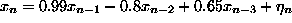
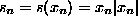
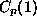
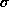
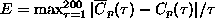
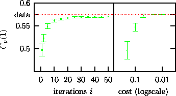
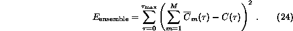
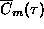

Consider the highly correlated autoregressive process , measured by the function  and then normalised to zero mean and unit variance. The strong correlation together with the rather strong static nonlinearity makes this a very difficult data set for the generation of surrogates. Figure 12 shows the bias and variance for a linear statistic, the unit lag autocorrelation , Eq.(15), as compared to its goal value given by the data. The left part of Fig. 12 shows versus the iteration count i for 200 iterative surrogates, i=1 roughly corresponding to AAFT surrogates. Although the mean accuracy increases dramatically compared to the first iteration stages, the data consistently remains outside a 2 error bound. Since nonlinear parameters will also pick up linear correlations, we have to expect spurious results in such a case. In the right part, annealed surrogates are generated with a cost function . The bias and variance of are plotted versus the cost E. Since the cost function involves , it is not surprising that we see good convergence of the bias. It is also noteworthy that the variance is in any event large enough to exclude spurious results due to remaining discrepancy in the linear correlations.

Figure: Bias and variance of unit lag autocorrelation for ensembles of surrogates. Left part: plotted versus the iteration count i for 200 iterative surrogates. The AAFT method gives accuracies comparable to the value obtained for i=1. Right part: plotted versus the goal value of the cost function for 20 annealed surrogates. The horizontal line indicates the sample value for the data sequence. See text for discussion.
Kugiumtzis [39] suggests to test the validity of the surrogate
sample by performing a test using a linear statistic for normalisation. For the
data shown in Fig. 12, this would have detected the lack of
convergence of the iterative surrogates. Currently, this seems to be the only
way around the problem and we thus recommend to follow his suggestion. With the
much more accurate annealed surrogates, we haven't so far seen examples of
dangerous remaining inaccuracy, but we cannot exclude their possibility. If
such a case occurs, it may be possible to generate unbiased ensembles of
surrogates by specifying a cost function that explicitly minimises the bias.
This would involve the whole collection of M surrogates at the same time,
including extra terms like

Here,  denotes the autocorrelation function of the
m-th surrogate. In any event, this will be a very cumbersome procedure, in
terms of implementation and in terms of execution speed and it is questionable
if it is worth the effort.